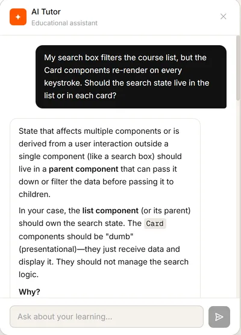
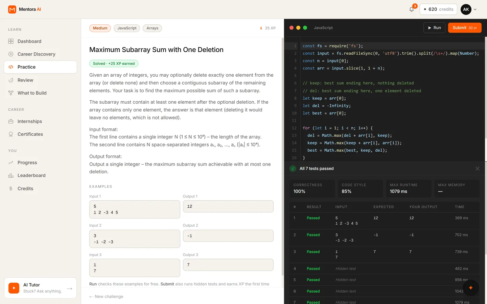
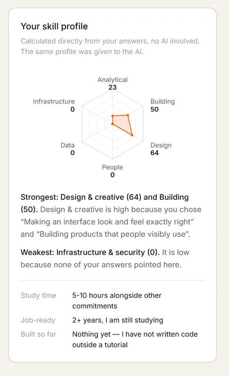
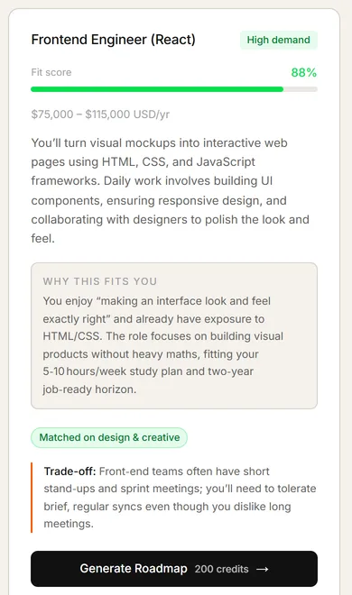
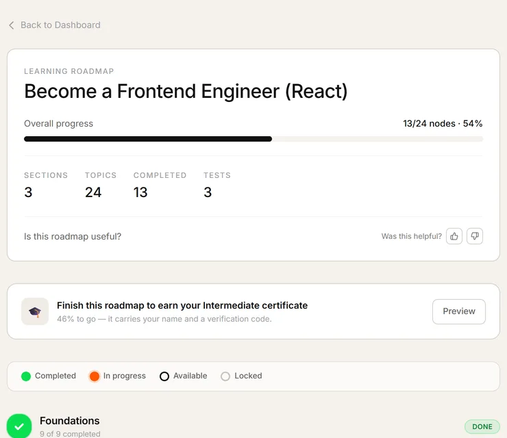
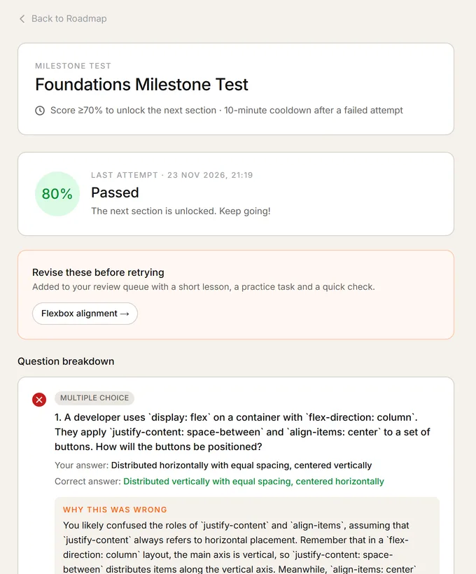
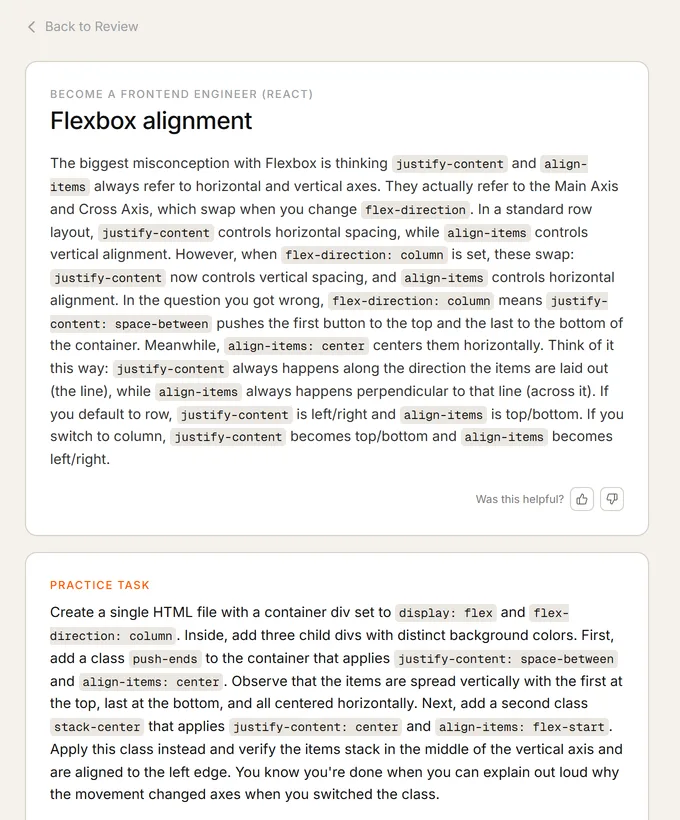
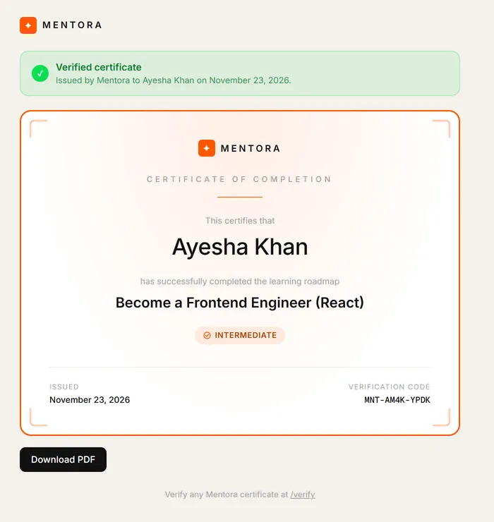

An AI tutor on every page
Ask from any page and the answer streams in, with formatted code blocks.

For students in Pakistan
Mentora is a study platform for students in Pakistan. It matches you to a career, builds the roadmap, tests every section, runs your code against real tests and shows you internships that are still open.
1,000 free credits when you sign up. No card needed.

Answer 14 questions. Get six skill scores and careers ranked by fit.
Turn a career into a three-section roadmap with checked links.
Finish each topic, then pass a test to open the next section.
Solve coding challenges that run against hidden tests.
Get one project idea, laid out step by step.
Earn a certificate anyone can verify and apply to open internships.
01 · Career discovery
Your 14 answers become six skill scores, worked out without AI, and each strength quotes the answers behind it. Then AI ranks careers by fit, with demand, a salary range and an honest trade-off.


02 · Roadmaps
Foundations, Intermediate and Advanced, laid out as a tree. Every resource link is checked when the roadmap is made: working links get a Verified badge and the rest become a search.


03 · Milestone tests and review
Every attempt is a new test: four multiple-choice questions and one short answer, graded on the server. Score 70% to unlock the next section. Topics you miss come back for review.


04 · Coding practice
Pick a language, a topic and a level. Your code runs in a sandbox against visible and hidden tests, and only the tests decide whether it passed. The AI reviews your style but cannot change the result.
05 · Internships
Collected every 6 hours from LinkedIn, pintern.net, jobz.pk, company career pages and web search. Every listing is in Pakistan or remote, posted in the last 45 days and still taking applications.

06 · Certificate
Issued only when every topic is done and every milestone test is passed. The PDF has a QR code that opens a public page, so a recruiter can check it without an account.


Also in your account
Ask from any page and the answer streams in, with formatted code blocks.

Answer seven questions and get one project, drawn as a graph of build steps.

Active study time, XP, levels, badges and a weekly leaderboard.

Prices
Reading your roadmap, reviewing topics and tracking progress are free. If the AI fails, the credits come back automatically.
1,000free credits for every new account
| Action | Credits |
|---|---|
| Career suggestions | 50 |
| Generate a roadmap | 200 |
| Generate a milestone test | 60 |
| Generate a coding challenge | 40 |
| Evaluate a code submission | 30 |
| Generate a project blueprint | 150 |
| AI tutor message | 5 |
Questions
Every new account gets 1,000 credits: enough for the career test, a full roadmap and all three of its milestone tests. Reading your roadmap, reviewing topics and tracking progress never cost credits.
No. Every roadmap starts with Foundations, and coding challenges come in easy, medium and hard.
On the server. Correct answers never reach your browser, the short answer is marked against a hidden rubric, and code only passes when its tests pass.
You get clearly labelled practice content instead, and the credits for that action are refunded automatically.
LinkedIn, pintern.net, jobz.pk, company career pages and web search. You always apply on the original listing.
Yes. Anyone can scan its QR code or enter its code at /verify, without an account.
It costs 50 of your 1,000 free credits, and your results stay saved.